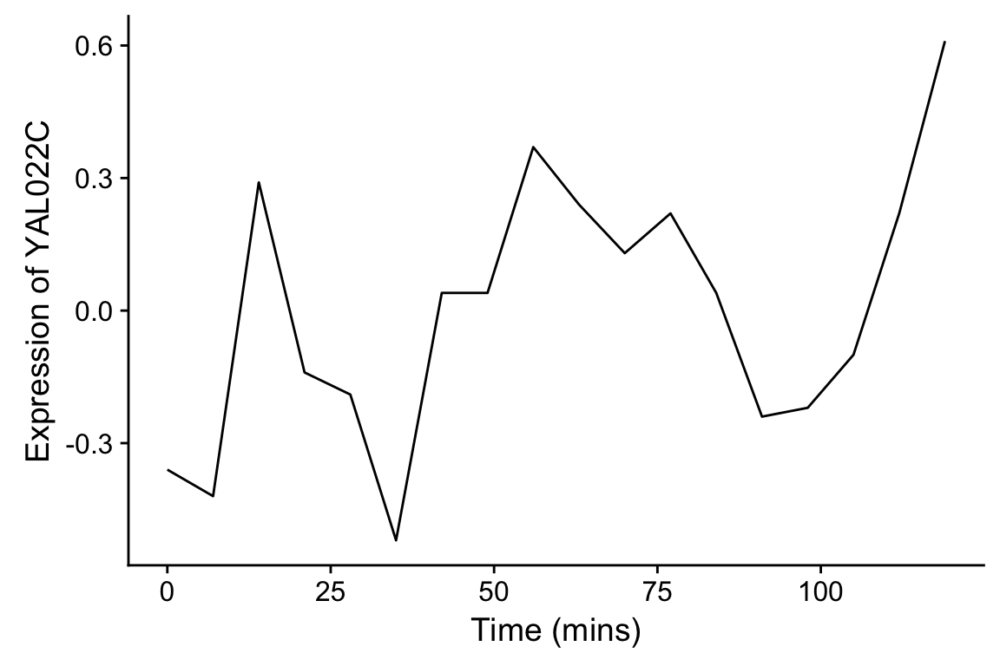
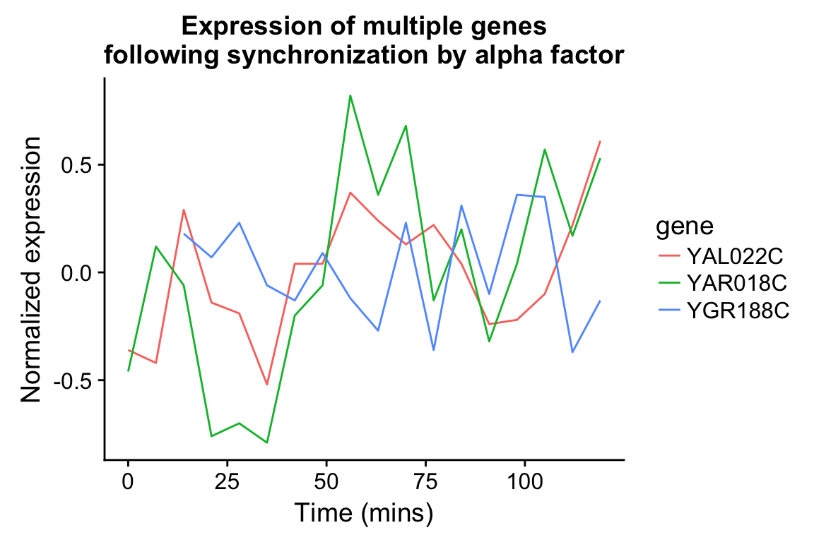
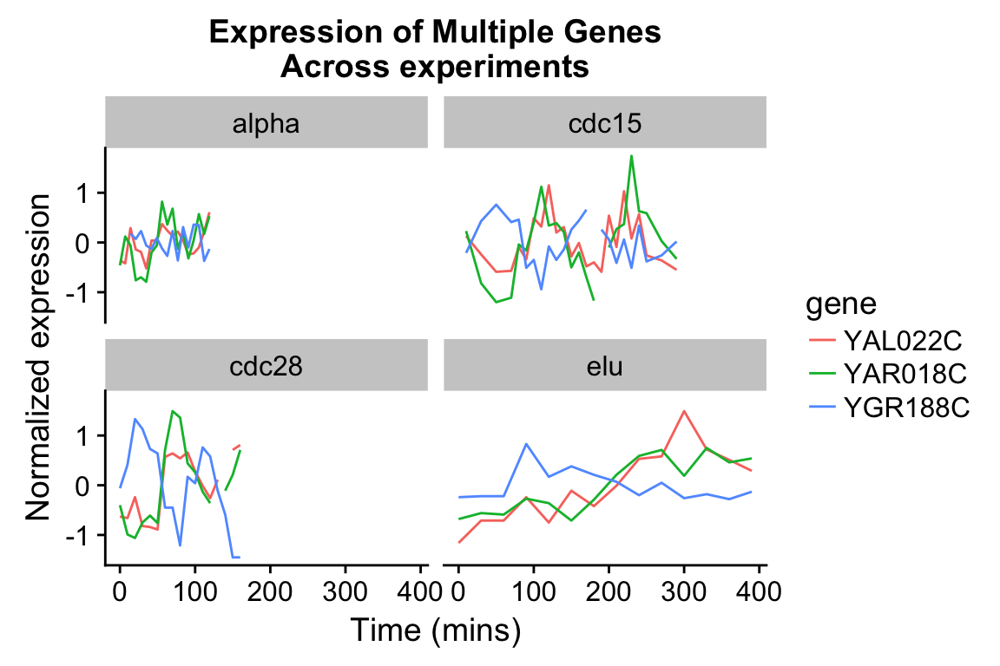
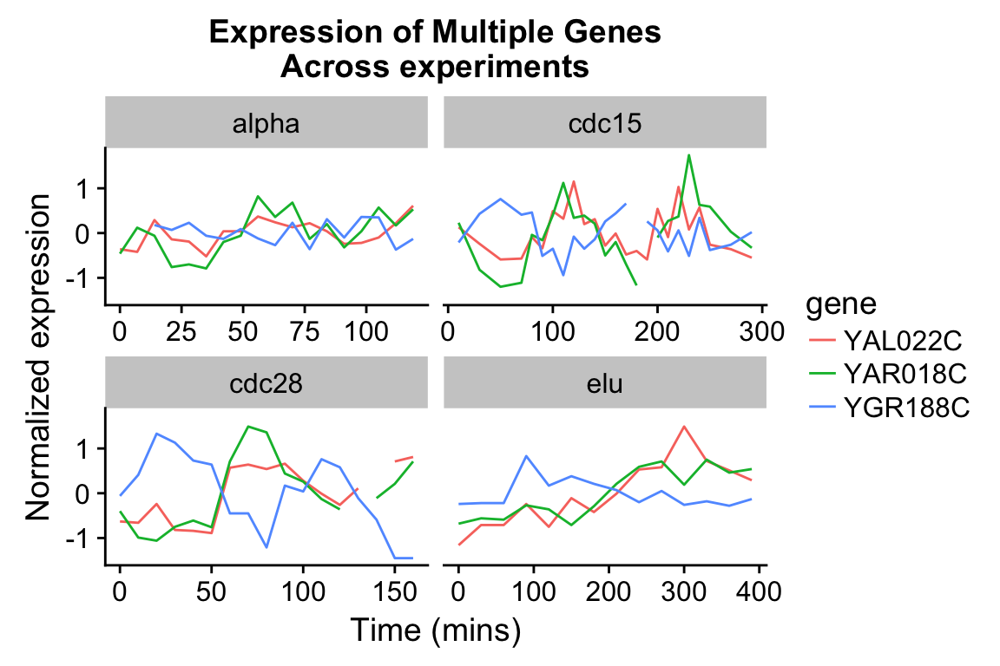
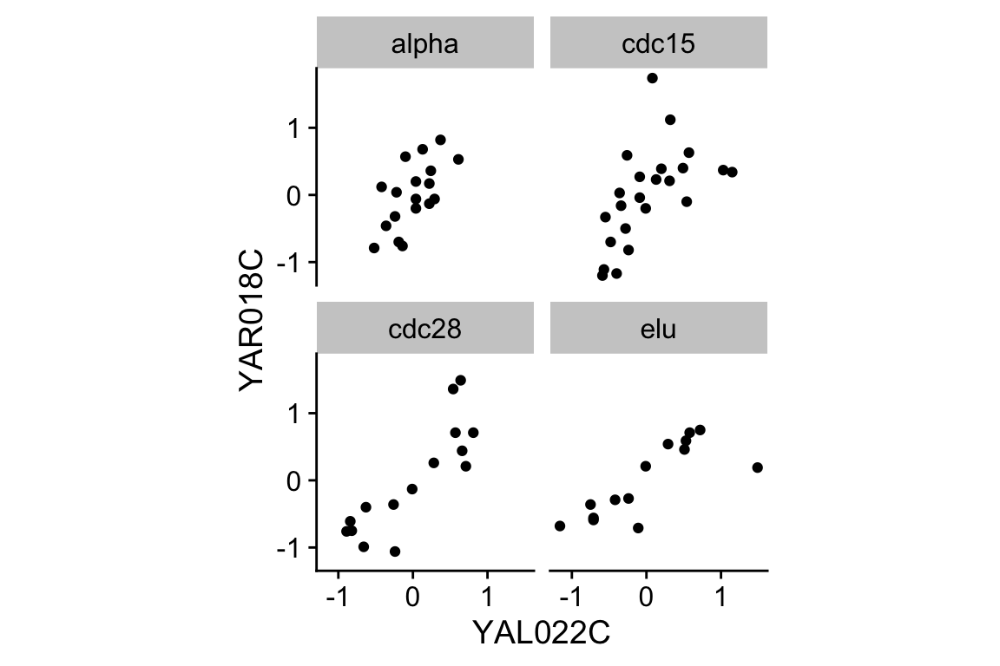
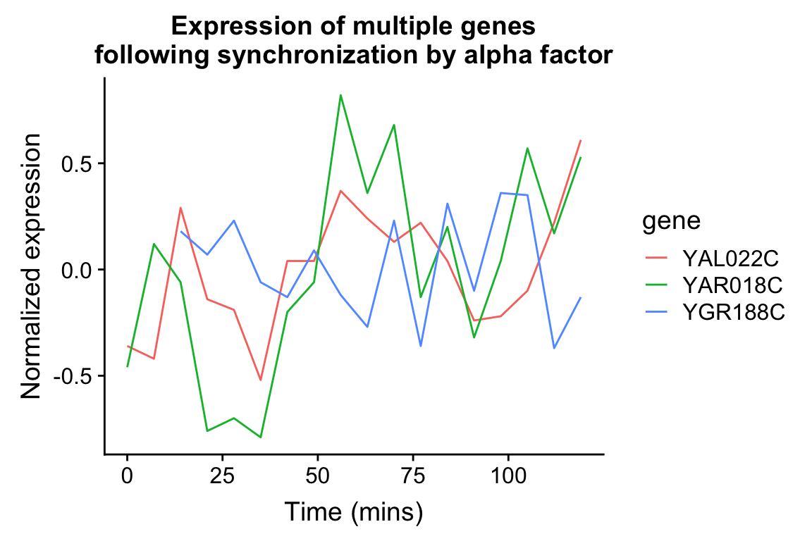
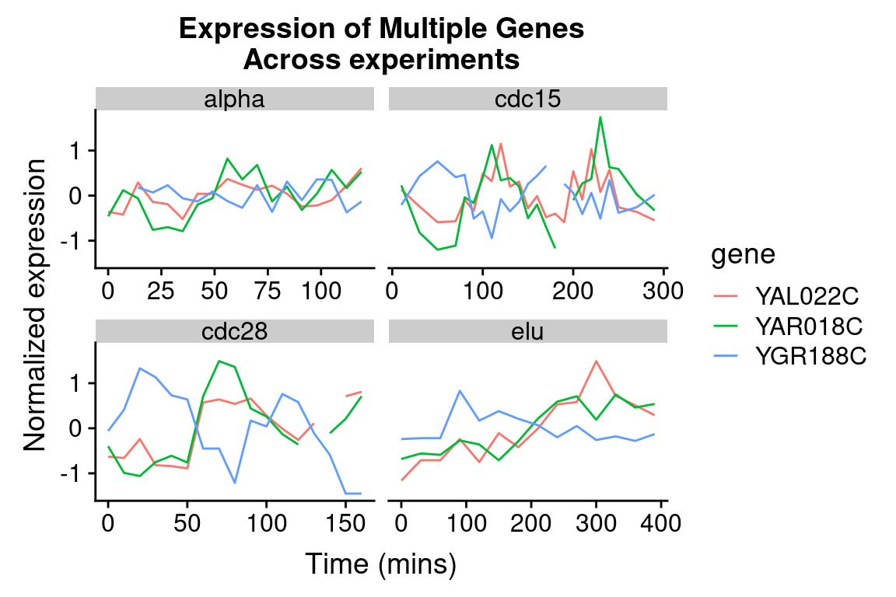
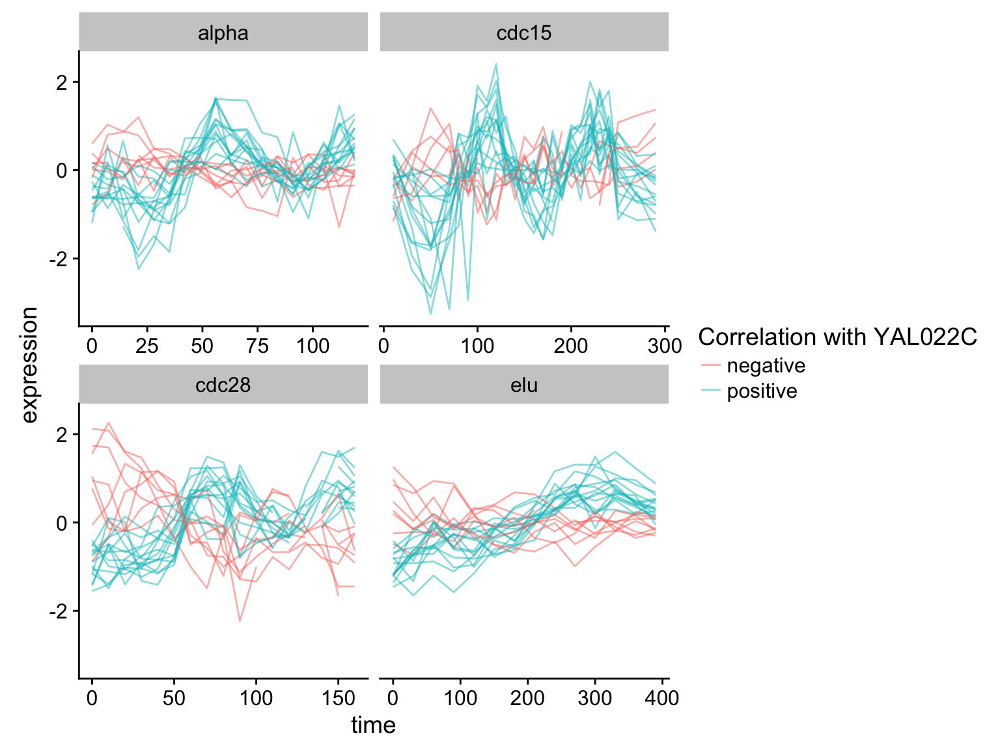
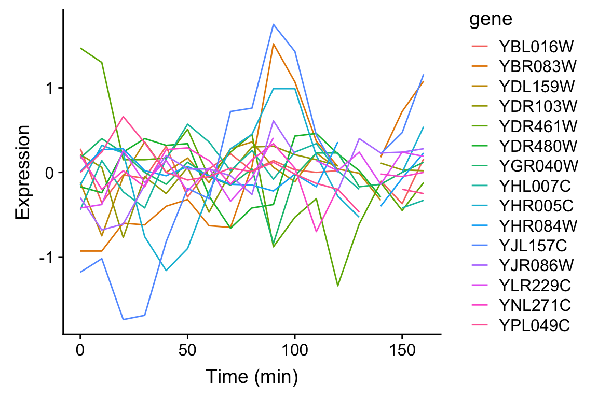

Chapter 7 Data wrangling
In the real world you’ll often create a data set (or be given one) in a format that is less than ideal for analysis. This can happen for a number of reasons. For example, the data may have been recorded in a manner convenient for collection and visual inspection, but which does not work well for analysis and plotting. Or the data may be an amalgamation of multiple experiments, in which each of the experimenters used slightly different naming conventions. Or the data may have been produced by an instrument that produces output with a fixed format. Sometimes important experimental information is included in the column headers of a spreadsheet.
Whatever the case, we often find ourselves in the situation where we need to “wrangle” our data into a “tidy” format before we can proceed with visualization and analysis. The “R for Data Science” text discusses some desirable rules for “tidy” data in order to facilitate downstream analyses. These are:
- Each variable must have its own column.
- Each observation must have its own row.
- Each value must have its own cell.
In this lecture we’re going to walk through an extended example of wrangling some data into a “tidy” format.
7.1 Libraries
library(magrittr)
library(stringr)
library(tidyverse)
library(cowplot)7.2 Data
To illustrate a standard data wrangling pipeline, we’re going to use a gene expression microarray data set, based on the following paper:
- Spellman PT, et al. 1998. Comprehensive identification of cell cycle-regulated genes of the yeast Saccharomyces cerevisiae by microarray hybridization. Mol Biol Cell 9(12): 3273-97.
In this paper, Spellman and colleagues tried to identify all the genes in the yeast genome (>6000 genes) that exhibited oscillatory behaviors suggestive of cell cycle regulation. To do so, they combined gene expression measurements from six different types of cell cycle synchronization experiments.
Download the Spellman data to your filesystem from this link (right-click the “Download” button and save to your Downloads folder or similar).
I suggest that once you download the data, you open it in a spreadsheet program (e.g. Excel) or use the RStudio Data Viewer to get a sense of what the data looks like.
Let’s load it into R, using the read_tsv() function, using the appropriate file path.
# the filepath may differ on your computer
spellman <- read_tsv("~/Downloads/spellman-combined.txt")
Parsed with column specification:
cols(
.default = col_double(),
X1 = col_character(),
clb = col_character(),
alpha = col_character(),
cdc15 = col_character(),
cdc28 = col_character(),
elu = col_character()
)
See spec(...) for full column specifications.The initial dimenions of the data frame are:
dim(spellman)
[1] 6178 83The six types of cell cycle synchronization experiments are:
- synchronization by alpha-factor = “alpha”
- synchronization by cdc15 temperature sensitive mutants = “cdc15”
- synchronization by cdc28 temperature sensitive mutants = “cdc28”
- synchronization by elutration = “elu”
- synchronization by cln3 mutatant strains = “cln3”
- synchronization by clb2 mutant strains = “clb2”
7.3 Renaming data frame columms
Notice that when we imported the data we got a warning message: Missing column names filled in: 'X1' [1]. In a data frame, every column must have a name. The first column of our data set did not have a name in the header, so read_tsv automatically gave it the name X1.
Our first task is to give the first column a more meaningful name. This column gives “systematic gene names” – a standardized naming scheme for genes in the yeast genome. We’ll use dplyr::rename to do rename X1 to gene. Note that rename can take multiple arguments if you need to rename multiple columns simultaneously.
spellman.clean <-
spellman %>%
rename(gene = X1)7.4 Dropping unneeded columns
Take a look at the Spellman data again in your spreadsheet program (or the R Studio data viewer). You’ll notice there are some blank columns. These are simply visual organizing elements that the creator of the spreadsheet added to separate the different experiments that are included in the data set.
We can use dplyr::select to drop columns by prependingcolumn names with the negative sign:
# drop the alpha column keeping all others
spellman.clean %<>%
select(-alpha) Note that usually select() keeps only the variables you specify. However if the first expression is negative, select will instead automatically keep all variables, dropping only those you specify.
7.4.1 Finding all empty columns
In the example above, we looked at the data and saw that the “alpha” column was empty, and thus dropped it. This worked because there are only a modest number of columns in the data frame in it’s initial form. However, if our data frame contained thousands of columns, this “look and see” procedure would not be efficient. Can we come up with a general solution for removing empty columns from a data frame?
When you load a data frame from a spreadsheet, empty cells are given the value NA. In previous class sessions we were introduced to the function is.na() which tests each value in a vector or data frame for whether it’s NA or not. We can count NA values in a vector by summing the output of is.na(). Conversely we can count the number of “not NA” items by using the negation operator (!):
# count number of NA values in the alpha0 column
sum(is.na(spellman$alpha0))
[1] 165
# count number of values that are NOT NA in alpha0
sum(!is.na(spellman$alpha0))
[1] 6013This seems like it should get us close to a solution but sum(is.na(..)) when applied to a data frame counts NAs across the entire data frame, not column-by-column.
# doesn't do what we hoped!
sum(is.na(spellman))
[1] 59017If we want sums of NAs by column, we instead use the colSums() function:
# get number of NAs by column
colSums(is.na(spellman))
X1 cln3-1 cln3-2 clb clb2-2 clb2-1 alpha
0 193 365 6178 454 142 6178
alpha0 alpha7 alpha14 alpha21 alpha28 alpha35 alpha42
165 525 191 312 267 207 123
alpha49 alpha56 alpha63 alpha70 alpha77 alpha84 alpha91
257 147 186 185 178 155 329
alpha98 alpha105 alpha112 alpha119 cdc15 cdc15_10 cdc15_30
209 174 222 251 6178 677 477
cdc15_50 cdc15_70 cdc15_80 cdc15_90 cdc15_100 cdc15_110 cdc15_120
501 608 573 562 606 570 611
cdc15_130 cdc15_140 cdc15_150 cdc15_160 cdc15_170 cdc15_180 cdc15_190
495 574 811 583 571 803 613
cdc15_200 cdc15_210 cdc15_220 cdc15_230 cdc15_240 cdc15_250 cdc15_270
1014 573 741 596 847 379 537
cdc15_290 cdc28 cdc28_0 cdc28_10 cdc28_20 cdc28_30 cdc28_40
426 6178 122 72 67 55 66
cdc28_50 cdc28_60 cdc28_70 cdc28_80 cdc28_90 cdc28_100 cdc28_110
56 82 84 75 237 165 319
cdc28_120 cdc28_130 cdc28_140 cdc28_150 cdc28_160 elu elu0
312 1439 2159 521 543 6178 122
elu30 elu60 elu90 elu120 elu150 elu180 elu210
153 175 132 103 119 111 118
elu240 elu270 elu300 elu330 elu360 elu390
131 110 112 112 156 114 Columns with all missing values can be more conveniently found by asking for those columns where the number of “not missing” values is zero:
# get names of all columns for which all rows are NA
# useing standard indexing
names(spellman)[colSums(!is.na(spellman)) == 0]
[1] "clb" "alpha" "cdc15" "cdc28" "elu" We can combine the colSums(!is.na()) idiom with the dplyr::select_if function to quickly remove all empty columns as so:
spellman.clean %<>%
# keep ONLY the non-empty columns
select_if(colSums(!is.na(.)) > 0)7.4.2 Dropping columns by matching names
Only two time points from the cln3 and clb2 experiments were reported in the original publication. Since complete time series are unavailable for these two experimental conditions we will drop them from further consideration.
select() can be called be called with a number of “helper function” (?select_helpers). Here we’ll illustrate the matches() helper function which matches column names to a “regular expression”. Regular expressions (also referred to as “regex” or “regexp”) are a way of specifying patterns in string. For the purposes of this document we’ll illustrate regexs by example; for a more detailed explanation of regular expressions see the the regex help(?regex) and the Chapter on Strings in “R for Data Analysis”:
Let’s see how to drop all the “cln3” and “clb2” columns from the data frame using matches():
spellman.clean %<>%
select(-matches("cln3")) %>%
select(-matches("clb2"))If we wanted we could have collapsed our two match statements into one as follows:
spellman.clean %<>%
select(-matches("cln3|clb2"))In this second example, the character “|” is specifing an OR match within the regular expression, so this regular expression matches column names that contain “cln3” OR “clb2”.
7.5 Reshaping data with tidyr
The tidyr package provides functions for reshaping or tidying data frames. tidyr is yet another component of the tidyverse, and thus was loaded by the library(tidyverse).
Today we’re going to look at two functions tidyr::gather() and tidyr::extract(), and how they can be combined with now familiar dplyr functions we’ve seen previously. The reading assignment for today’s class session covers a variety of other functions defined in tidyr.
The Spellman data, as I provided it to you, is in what we would call “wide” format. Each column (besides the gene column) corresponds to an experimental condition and time point. For example, “alpha0” is the alpha-factor experiment at time point 0 mins; “alpha7” is the alpha-factor experiment at time point 7 mins, etc. The cells within each column correspond to the expression of a corresponding gene (given by the first column which we renamed gene) in that particular experiment at that particular time point.
In every column (except “gene”), the cellsrepresents the same abstract property of interest – the expression of a gene of interest in a particular experiment/time point. Our first task will be to rearrange our “wide” data frame that consists of many different columns representing gene expression into a “long” data frame with just a single column representing expression. We’ll also create a new column to keep track of the which experiment and time point the measurement came from.
7.5.1 Wide to long conversions using tidyr::gather
tidyr::gather() takes multiple columns, and collapses them together into a smaller number of new columns. When using gather() you give the names of the new columns to create, as well as the names of any existing columns gather should not collect together.
Here we want to collapse all 73 or the expression columns – “alpha0” to “elu390” – into two columns: 1) a column to represent the expt/time point of the measurement, and 2) a column to represent the corresponding expression value. The only column we don’t want to touch is the gene column with our gene names.
# convert "wide" data to "long"
spellman.long <-
spellman.clean %>%
gather(expt.and.time, expression, -gene)Take a moment to look at the data in the “long format”:
head(spellman.long)
# A tibble: 6 x 3
gene expt.and.time expression
<chr> <chr> <dbl>
1 YAL001C alpha0 -0.150
2 YAL002W alpha0 -0.110
3 YAL003W alpha0 -0.140
4 YAL004W alpha0 -0.0200
5 YAL005C alpha0 -0.0500
6 YAL007C alpha0 -0.600 And compare the dimensions of the wide data to the new data:
dim(spellman.clean) # for comparison
[1] 6178 74
dim(spellman.long)
[1] 450994 3As you see, we’ve gone from a data frame with 6178 rows and 74 columns (wide format), to a new data frame with 450994 rows and 3 columns (long format).
7.5.2 Extracting information from combined variables using tidyr::extract
The column expt.and.time violates one of our principles of tidy data: “Each variable must have its own column.”. This column conflates two different types of information – the experiment type and the time point of the measurement. Our next task is to split this information up into two new variables, which will help to facilitate downstream plotting and analysis.
One complicating factor is that the different experiments/time combinations have different naming conventions:
The “alpha” and “elu” experiments are of the form “alpha0”, “alpha7”, “elu0”, “elu30”, etc. In this case, the first part of the string gives the experiment type (either alpha or elu) and the following digits give the time point.
In the “cdc15” and “cdc28” experiments the convention is slightly different; they are of the form “cdc15_0”, “cdc15_10”, “cdc28_0”, “cdc28_10”, etc. Here the part of the string before the underscore gives the experiment type, and the digits after the underscore give the time point.
Because of the differences in naming conventions, we will find it easiest to break up spellman.long into a series of sub-data sets corresponding to each experiment type in order to extract out the experiment and time information. After processing each data subset separately, we will join the modified sub-data frames back together.
7.5.3 Subsetting rows
Let’s start by getting just the rows corresponding to the “alpha” experiment/times. Here we use dplyr::filter in combination with stringr::str_detect to get all those rows in which the expt.and.time variable contains the string “alpha”.
alpha.long <-
spellman.long %>%
filter(str_detect(expt.and.time, "alpha"))
# look at the new data frame
dim(alpha.long)
[1] 111204 3
head(alpha.long, n = 10)
# A tibble: 10 x 3
gene expt.and.time expression
<chr> <chr> <dbl>
1 YAL001C alpha0 -0.150
2 YAL002W alpha0 -0.110
3 YAL003W alpha0 -0.140
4 YAL004W alpha0 -0.0200
5 YAL005C alpha0 -0.0500
6 YAL007C alpha0 -0.600
7 YAL008W alpha0 -0.280
8 YAL009W alpha0 -0.0300
9 YAL010C alpha0 -0.0500
10 YAL011W alpha0 -0.310 7.5.4 Splitting columns
Having subsetted the data, we can now split expt.and.time into two new variables – expt and time. To do this we use tidyr::extract.
alpha.long %<>%
tidyr::extract(expt.and.time, # column we're extracting from
c("expt", "time"), # new columns we're creating
regex="(alpha)([[:digit:]]+)", # regexp (see below)
convert=TRUE) # automatically convert column types
# NOTE: I'm being explict about saying tidyr::extract because the
# magrittr package defines a different extract functionLet’s take a moment to look at the regex argument to extract – regex="(alpha)([[:digit:]]+)". The regex is specified as a character string. Each part we want to match and extract is surround by parentheses. In this case we have two sets of parentheses corresponding to the two matches we want to make. The first part of the regex is (alpha); here we’re looking to make an exact match to the string “alpha”. The second part of the regex reads ([[:digit:]]+). [[:digit:]] indicates we’re looking for a numeric digit. The + after [[:digit:]] indicates that we want to match one or more digits (i.e. to get a match we need to find at least one digit, but more than one digit should also be a match).
Let’s take a look at the new version of alpha.long following application of extract:
head(alpha.long, n = 10)
# A tibble: 10 x 4
gene expt time expression
<chr> <chr> <int> <dbl>
1 YAL001C alpha 0 -0.150
2 YAL002W alpha 0 -0.110
3 YAL003W alpha 0 -0.140
4 YAL004W alpha 0 -0.0200
5 YAL005C alpha 0 -0.0500
6 YAL007C alpha 0 -0.600
7 YAL008W alpha 0 -0.280
8 YAL009W alpha 0 -0.0300
9 YAL010C alpha 0 -0.0500
10 YAL011W alpha 0 -0.310 Notice our two new variables, both of which have appropriate types!
A data frame for the elutriation data can be created similarly:
elu.long <-
spellman.long %>%
filter(str_detect(expt.and.time, "elu")) %>%
tidyr::extract(expt.and.time, # column we're extracting from
c("expt", "time"), # new columns we're creating
regex="(elu)([[:digit:]]+)", # regexp (see below)
convert=TRUE) # automatically convert column types7.5.4.1 A fancier regex for the cdc experiments
Now let’s process the cdc experiments (cdc15 and cdc28). As before we extract the corresponding rows of the data frame using filter and str_detect. We then split expt.and.time using tidyr::extract. In this case we carry out the two steps in a single code block using pipes:
cdc.long <-
spellman.long %>%
# both cdc15 and cdc28 contain "cdc" as a sub-string
filter(str_detect(expt.and.time, "cdc")) %>%
tidyr::extract(expt.and.time,
c("expt", "time"),
regex="(cdc15|cdc28)_([[:digit:]]+)", # note the fancier regex
convert=TRUE)The regex – "(cdc15|cdc28)_([[:digit:]]+)" – is slightly fancier in this example. As before there are two parts we’re extracting: (cdc15|cdc28) and ([[:digit:]]+). The first parenthesized regexp is an “OR” – i.e. match “cdc15” or “cdc28”. The second parenthesized regexp is the same as we saw previously. Separating the two parenthesized regexps is an underscore (_). The underscore isn’t parenthesized because we only want to use it to make a match not to extract the corresponding match.
7.5.5 Combining data frame rows
If you have two or more data frames with identical columns, the rows of the data frame can be combined using rbind (defined in the base package). For example, to reassemble the alpha.long, elu.long, and cdc.long data frames into a single data frame we do:
spellman.final <- rbind(alpha.long, elu.long, cdc.long)
# check the dimensions of the new data frame
dim(spellman.final)
[1] 450994 47.5.6 Sorting data frame rows
Currently the spellman.final data frame is sorted by time point and experiment.
head(spellman.final, n = 10)
# A tibble: 10 x 4
gene expt time expression
<chr> <chr> <int> <dbl>
1 YAL001C alpha 0 -0.150
2 YAL002W alpha 0 -0.110
3 YAL003W alpha 0 -0.140
4 YAL004W alpha 0 -0.0200
5 YAL005C alpha 0 -0.0500
6 YAL007C alpha 0 -0.600
7 YAL008W alpha 0 -0.280
8 YAL009W alpha 0 -0.0300
9 YAL010C alpha 0 -0.0500
10 YAL011W alpha 0 -0.310 It might be useful instead to sort by gene and experiment. To do this we can use dplyr::arrange:
spellman.final %<>%
arrange(gene, expt)
# look again at the rearranged data
head(spellman.final, n = 10)
# A tibble: 10 x 4
gene expt time expression
<chr> <chr> <int> <dbl>
1 YAL001C alpha 0 -0.150
2 YAL001C alpha 7 -0.150
3 YAL001C alpha 14 -0.210
4 YAL001C alpha 21 0.170
5 YAL001C alpha 28 -0.420
6 YAL001C alpha 35 -0.440
7 YAL001C alpha 42 -0.150
8 YAL001C alpha 49 0.240
9 YAL001C alpha 56 -0.100
10 YAL001C alpha 63 NA 7.5.7 Collapsing columns using tidyr::unite
unite combines the data from multiple columns into one, separating the column data with a consistent separator character (the underscore character “_" by default). For example, if we wanted to combined the experiment and time columns again (recall that we previously separated with with extract) we could do:
spellman.recombined <-
spellman.final %>%
unite(expt.and.time, expt, time) # give new column name first
# then give columns to combine
dim(spellman.recombined)
[1] 450994 3
head(spellman.recombined, n = 10)
# A tibble: 10 x 3
gene expt.and.time expression
<chr> <chr> <dbl>
1 YAL001C alpha_0 -0.150
2 YAL001C alpha_7 -0.150
3 YAL001C alpha_14 -0.210
4 YAL001C alpha_21 0.170
5 YAL001C alpha_28 -0.420
6 YAL001C alpha_35 -0.440
7 YAL001C alpha_42 -0.150
8 YAL001C alpha_49 0.240
9 YAL001C alpha_56 -0.100
10 YAL001C alpha_63 NA 7.5.8 Splitting columns using tidyr::separate
separate splits a column into multiple columns. It’s very much like extract except that it only takes a single regex for the separator, which by default is any non-alphabetic or non-numeric character. For example, to re-split expt.and.time in spellman.recombined we could do:
spellman.respread <-
spellman.recombined %>%
separate(expt.and.time, c("expt", "time"), convert = TRUE)
dim(spellman.respread)
[1] 450994 4
head(spellman.respread,n= 10)
# A tibble: 10 x 4
gene expt time expression
<chr> <chr> <int> <dbl>
1 YAL001C alpha 0 -0.150
2 YAL001C alpha 7 -0.150
3 YAL001C alpha 14 -0.210
4 YAL001C alpha 21 0.170
5 YAL001C alpha 28 -0.420
6 YAL001C alpha 35 -0.440
7 YAL001C alpha 42 -0.150
8 YAL001C alpha 49 0.240
9 YAL001C alpha 56 -0.100
10 YAL001C alpha 63 NA Faced with the task of splitting columns, try tidyr::separate first and only consider tidyr::extract if you need to defines more sophisticated rules for splitting.
7.5.9 Long-to-wide conversion using tidyr::spread
tidyr::spread is the inverse of tidyr::gather. gather() took multiple columns and collapsed them together into a smaller number of new columns. The tidyr documentation calls this “collapsing into key-value pairs”. By contrast, spread() creates new columns by spreading “key-value pairs” (a column representing the “keys” and a column reprsenting the “values”) into multiple columns.
Here let’s use spread to use the gene names (the “key”) and expression measures (the “values”) to create a new data frame where the genes are the primary variables (columns) of the data.
spellman.gene.focused <-
spellman.final %>%
spread(gene, expression)
dim(spellman.gene.focused)
[1] 73 6180Both “long” and “wide” tidy versions of the same data are useful, depending on the specific analyses and/or visualiztions you want to accomplish. We’ll look at applications of both in the sections that follow.
7.6 Using your tidy data
Whew – that was a fair amount of work to tidy our data! But having done so we can now carry out a wide variety of very powerful analyses.
7.6.1 Visualizing gene expression time series
Let’s start by walking through a series of visualizations of gene expression time series. Each plot will show the expression of one or more genes, at different time points, in one or more experimental conditions. Our initial visualizations exploit the “long” versions of the tidy data.
First a single gene in a single experimental condition:
spellman.final %>%
filter(expt == "alpha", gene == "YAL022C") %>%
ggplot(aes(x = time, y = expression)) +
geom_line() +
labs(x = "Time (mins)", y = "Expression of YAL022C")
We can easily modify the above code block to visualize the expression of multiple genes of interest:
genes.of.interest <- c("YAL022C", "YAR018C", "YGR188C")
spellman.final %>%
filter(gene %in% genes.of.interest, expt == "alpha") %>%
ggplot(aes(x = time, y = expression, color = gene)) +
geom_line() +
labs(x = "Time (mins)", y = "Normalized expression",
title = "Expression of multiple genes\nfollowing synchronization by alpha factor") By employing facet_wrap() we can visualize the relationship between this set of genes in each of the experiment types:
spellman.final %>%
filter(gene %in% genes.of.interest) %>%
ggplot(aes(x = time, y = expression, color = gene)) +
geom_line() +
facet_wrap(~ expt) +
labs(x = "Time (mins)", y = "Normalized expression",
title = "Expression of Multiple Genes\nAcross experiments") 
The different experimental treatments were carried out for varying lengths of time due to the differences in their physiological effects. Plotting them all on the same time scale can obscure that patterns of oscillation we might be interested in, so let’s modify our code block so that plots that share the same y-axis, but have differently scaled x-axes.
spellman.final %>%
filter(gene %in% genes.of.interest) %>%
ggplot(aes(x = time, y = expression, color = gene)) +
geom_line() +
facet_wrap(~ expt, scales = "free_x") +
labs(x = "Time (mins)", y = "Normalized expression",
title = "Expression of Multiple Genes\nAcross experiments") 
7.6.2 Finding the most variable genes
When dealing with vary large data sets, one ad hoc filtering criteria that is often employed is to focus on those variables that exhibit that greatest variation. To do this, we first need to order our variables (genes) by their variation. Let’s see how we can accomplish this using our long data frame:
by.variance <-
spellman.final %>%
group_by(gene) %>%
summarize(expression.var = var(expression, na.rm = TRUE)) %>%
arrange(desc(expression.var))
head(by.variance)
# A tibble: 6 x 2
gene expression.var
<chr> <dbl>
1 YLR286C 2.16
2 YNR067C 1.73
3 YNL327W 1.65
4 YGL028C 1.57
5 YHL028W 1.52
6 YKL164C 1.52The code above calculates variance but ignores the fact that we have different experimental conditions. To take into account the experimental design of the data at hand, let’s calculate the average variance across the experimental conditions:
by.avg.variance <-
spellman.final %>%
group_by(gene, expt) %>%
summarize(expression.var = var(expression, na.rm = TRUE)) %>%
group_by(gene) %>%
summarize(avg.expression.var = mean(expression.var)) %>%
arrange(desc(avg.expression.var))
head(by.avg.variance)
# A tibble: 6 x 2
gene avg.expression.var
<chr> <dbl>
1 YFR014C 3.58
2 YFR053C 2.38
3 YBL032W 2.30
4 YDR274C 2.17
5 YLR286C 2.13
6 YMR206W 1.94Based on the average experession variance across experimental conditions, let’s get the names of the 1000 most variable genes:
top.genes.1k <- by.avg.variance[1:1000,]$gene
head(top.genes.1k)
[1] "YFR014C" "YFR053C" "YBL032W" "YDR274C" "YLR286C" "YMR206W"7.6.3 Exploring bivariate relationships using “wide” data
The “long” version of our data frame proved useful for exploring how gene expression changed over time. By contrast, our “wide” data frame is more convient for exploring how pairs of genes covary together. For example, we can generate bivariate scatter plots depicting the relationship between two genes in the four different experimental conditions:
spellman.gene.focused %>%
filter(!is.na(YAL022C) & !is.na(YAR018C)) %>% # filter any missing values
ggplot(aes(x = YAL022C, y = YAR018C)) +
geom_point() +
theme(aspect.ratio = 1) +
facet_wrap(~expt, nrow = 2, ncol = 2) 
7.6.4 Calculating correlations between genes
Let’s explore more global bivariate relationships by calculating all the pairwise correlations between genes, focusing our attention on only the top 1000 most variable genes (as calculated previously).
Correlation is a measure of linear association between a pair of variables, and ranges from -1 to 1. A value near zero indicates the variables are uncorrelated (no linear association), while values approaching +1 indicate a strong positive association (the variables tend to get bigger or smaller together) while values near -1 indicate strong negative association (when one variable is larger, the other tends to be small).
First, let’s reduce our “wide” data frame to including only the top 1000 genes:
top.1k.wide <-
spellman.gene.focused %>%
# get expt and time column plus top 1000 genes
select(expt, time, top.genes.1k)
dim(top.1k.wide)
[1] 73 1002Now, we calculate the correlations between all those genes. We need to drop two columns from the data frame, corresponding to “expt” and “time”, and we then use the cor function to calculate the pairwise correlations. Since there is missing data (indicated with NAs) we also need to tell the cor function to only use pairwise complete observations when calculating correlations.
spellman.cor <-
top.1k.wide %>%
select(-expt, -time) %>% # drop expt and time
cor(use = "pairwise.complete.obs")The correlation matrix is a square matrix with the number of rows and columns equal to the number of variables:
dim(spellman.cor)
[1] 1000 1000To get the correlations with a gene of interest, we can index with the gene name on the rows of the correlation matrix. For example, to get all the correlations between the gene YAL022C and the other genes in the top 1000 set:
spellman.cor["YAL022C",]
YFR014C YFR053C YBL032W YDR274C YLR286C
-0.0286883534 0.1061796423 0.3143767286 -0.3151280104 -0.0844089765
YMR206W YCRX11W YNR067C YDR337W YNL327W
-0.2115248731 0.1159781117 0.3065585116 0.4778333353 0.2868559029
YCR104W YMR218C YGL028C YHL028W YER124C
-0.0440531822 0.0381755416 0.1330163451 0.4289999121 0.0359292260
YGR117C YKL164C YGL037C YBR090C YCR100C
0.0683951306 0.2656815642 -0.0771173501 0.0833816882 0.0945617330
YDL191W YNL018C YBR038W YNR044W YDL037C
0.0114585067 -0.1370538983 0.6767483573 -0.0501138796 0.1399467371
YBR054W YHR143W YNL296W YBR009C YGL055W
0.5874136129 -0.1017829045 0.2414025877 -0.0815754480 -0.1342443192
YHR152W YPR119W YBR040W YER070W YKL125W
0.5685684046 0.4944216448 -0.2220889263 -0.0625151935 -0.2427881831
YKL185W YOR255W YBL002W YGR108W YMR244W
0.3534584753 0.0513256848 -0.0288862913 0.5262281195 -0.4018006560
YPL061W YNL160W YDR033W YPR149W YER150W
0.3761353441 0.4869534960 0.6454767678 0.4839791735 -0.2357127137
YPL256C YNL030W YCRX16C YOL101C YLR183C
-0.2039214092 -0.1070530317 0.0638333407 -0.2199840099 -0.1128581074
YBR051W YMR297W YHR160C YPL163C YMR032W
-0.3088116505 0.0430893117 -0.2429794546 -0.0212938980 0.5425463399
YDR461W YBR088C YDR225W YKR039W YCR098C
-0.1908170286 -0.1650108329 -0.1242027461 0.2969274750 -0.1891684344
YKL163W YGR087C YBR158W YOL007C YMR058W
0.2996797052 -0.1152862904 0.1378974832 -0.2469726169 0.3907602438
YKR013W YFR025C YBR089W YGR044C YBR010W
-0.3376738415 0.1468963065 -0.1181068439 -0.0311776847 -0.1542630984
YBR092C YMR001C YNL020C YPL158C YDR224C
0.6833823397 0.4793964162 0.3016275342 0.3375996437 -0.1941701493
YPL021W YMR305C YKL096W YBL003C YDL125C
-0.1035945658 -0.0593409840 0.2244099811 -0.1246019635 0.1947516335
YNL002C YBL073W YGL089C YGR189C YDL003W
0.0425075311 0.3602637335 0.1429082759 0.0162498806 -0.2185164033
YDR327W YGR109C YHR162W YBL037W YMR215W
0.1421919404 0.0182997926 -0.0552174064 0.1453925831 0.1600066978
YML027W YHR055C YHR053C YJL153C YCL064C
-0.1771427528 -0.3997746469 -0.3781016372 -0.2530899200 0.0023790988
YBR072W YLR308W YPL127C YMR226C YOR247W
-0.2851121860 0.0133499022 -0.1847228615 0.0776092853 0.3205073786
YDL149W YPR156C YNL058C YGL188C YPL265W
-0.0256392164 0.5703507173 0.7406816267 0.0826286206 0.2582815082
YLL026W YCR021C YJL158C YHR178W YDL039C
-0.1537408516 -0.0739169450 0.3691184823 0.0458664853 0.1323709280
YBR108W YBL036C YKL086W YHR215W YIL140W
0.1310492504 0.2746395513 -0.3122257240 0.4479302089 -0.2289151564
YBL035C YDR055W YMR205C YNR009W YMR232W
-0.0798156989 0.3615737685 0.5013289098 -0.0741334683 -0.2504976667
YAL005C YPL267W YDR340W YJR082C YJL157C
0.0773313597 -0.2090532185 0.0391939977 -0.1413973109 0.5375692469
YNL279W YCR007C YLR190W YBR071W YCL040W
-0.0584967941 0.0694421074 0.5699897298 0.0834237477 0.0855301516
YJL159W YJL079C YNL057W YDL038C YLR049C
0.3292349327 0.3181403942 0.7078795864 -0.0202989479 0.1469737443
YMR199W YBR110W YMR250W YBR067C YAR071W
-0.0561794307 0.1870388826 -0.0454105037 0.0406480035 0.5579207051
YOR263C YPL240C YJL170C YER001W YMR107W
0.2380858365 -0.2140106688 -0.0169081501 -0.3153651235 0.0577110087
YIL141W YFL012W YOR248W YOR025W YJR004C
-0.2273536880 0.0127273347 0.2596667783 0.4540887836 0.1078818448
YNL078W YML047C YER081W YGL032C YDR475C
0.4099708355 -0.0357221844 -0.3001572147 -0.0896118230 -0.1542293261
YBL051C YNL082W YGL021W YDR097C YHR137W
0.1206507331 0.0897341739 0.4312426547 -0.1605522395 0.2964205629
YNL300W YNL031C YBR202W YFL066C YHR217C
-0.2778721995 -0.2167212809 0.6889264789 0.2399656802 -0.1037777337
YKR086W YPL186C YPR160W YKL178C YDR146C
-0.1532220801 0.0873683068 0.0853699755 0.2694210070 0.5687971948
YOR264W YFL014W YLL024C YIL123W YAL067C
0.2919668997 -0.3532417042 0.0591293552 0.2781267792 -0.2441177846
YLR300W YPL058C YBR124W YML058W YLR079W
0.2096401531 0.1924970262 0.1650570585 0.3104729553 0.1367913935
YAL004W YFL052W YDR258C YPR089W YCR005C
0.1192950712 0.1557951261 -0.1856847015 -0.2566943201 0.0515486602
YOL132W YOR382W YOL090W YOR315W YOR074C
-0.0863263324 -0.0182262059 -0.2418699878 0.6261722221 -0.0821462975
YMR179W YCL024W YPL187W YLR131C YMR189W
-0.0343346047 -0.1592876382 0.1555191336 0.4432887893 0.3938863771
YIL066C YPL121C YMR031C YDR278C YKR077W
-0.1864322080 -0.1361752489 0.3642248838 0.1425420496 0.0725875637
YDL123W YDL055C YMR317W YKR012C YJL115W
-0.0255725388 -0.0842054357 0.0261073152 -0.2689016878 -0.3354834652
YCL022C YLR178C YNR069C YPL062W YDR215C
-0.1228209908 -0.2706472546 -0.0708256297 0.1775223075 0.0624842812
YLR194C YPL153C YGR248W YIL158W YGL184C
0.0574184113 -0.1250398451 -0.1519125497 0.3695412028 -0.3261795208
YOR313C YDR451C YML034W YLR013W YHR182W
0.7087445727 0.1223004252 0.3747740962 0.1155198497 0.1153829979
YDR171W YDR380W YDR355C YHR066W YLR413W
-0.2177169286 0.3983529588 -0.0521061808 0.2570740438 0.1160772861
YBL013W YAR007C YLR217W YNL192W YDL222C
0.2255186281 -0.1966626306 -0.3889552994 0.2105866451 -0.1964242333
YGR227W YPR031W YBR078W YNL066W YFR015C
0.2710207098 -0.2431605366 0.4682509499 0.5015769081 0.1452400258
YLR136C YNL007C YDL179W YCL027W YGL121C
-0.2171544492 -0.0814742528 0.3428984751 -0.0224610024 -0.3288397352
YJR132W YCLX07W YJR119C YGL182C YDL160C
-0.0521454890 -0.0691820776 -0.1514407636 -0.1085282368 0.1211280108
YML128C YER053C YDR269C YDR535C YHR210C
0.0208170384 0.0131635837 0.0342189899 0.3190638098 -0.2171551339
YDL227C YGR142W YEL065W YGL116W YDL127W
0.0349337766 -0.1824083842 0.5020000273 0.5475455794 -0.0955093008
YGL238W YLR142W YBR083W YHR140W YNL036W
0.3341567242 -0.0070662369 0.2623249676 0.1395351562 0.1617281941
YEL011W YDR309C YOR383C YDR507C YDR039C
0.1664855038 0.0237342685 0.1406353361 0.2244170615 0.2026812879
YCL042W YPL165C YGR221C YBR138C YLL065W
0.0133317858 -0.1657346436 -0.1171675233 0.4017450077 0.2027991992
YDL163W YMR245W YIL129C YBR162C YKL132C
0.0184571398 -0.0484193698 -0.0004762559 0.4887184904 -0.1394617233
YML119W YMR326C YJR092W YPL141C YKL103C
0.5686976677 0.1615925226 0.4984168377 0.4123613340 -0.1781059131
YPL136W YLR109W YML100W YLR303W YKL096W-A
-0.0581992754 -0.1487032106 0.0561414368 -0.2176242658 0.3041131057
YGL240W YHR005C YCL055W YHR125W YPR028W
0.1172025071 0.2677456569 -0.1810688595 -0.3677622706 0.0704531199
YJL051W YKL172W YJL078C YGL230C YHR023W
0.4711181785 -0.2721991245 -0.0678252090 -0.4688018634 0.5911430711
YIL029C YAR018C YOR024W YGR092W YBR183W
0.1402047310 0.6915321996 0.0876010033 0.6391449885 0.3918884624
YHL021C YDL164C YBL108W YAL054C YMR011W
0.0925680240 0.1199445452 0.4126670740 0.3895593119 0.2688081349
YHR126C YNL270C YMR186W YPL223C YCL013W
0.1049504910 0.0728111686 -0.0454025754 -0.0303845805 0.3194041454
YDR300C YGR152C YJR150C YCR097WA YAL066W
0.1400593164 -0.2767921070 0.0965685215 0.2043400848 -0.0170308913
YJR010W YPR018W YJL116C YIL025C YMR210W
-0.2648643460 -0.0732719999 0.0140673365 -0.1236160878 0.1427579604
YNL102W YLR258W YLR235C YBL078C YMR241W
-0.2677697358 0.0224981675 -0.1399501977 -0.0022903055 0.3729657962
YOL084W YPR096C YBR093C YDL083C YGR008C
-0.0990741926 -0.0743702551 0.5109771486 -0.1311365154 -0.0970744867
YFL056C YFR057W YPL130W YDR273W YGR041W
-0.1323317470 -0.2684767856 -0.1524079708 0.0185778762 0.0776420058
YNL283C YPL036W YJR128W YLR327C YKL177W
-0.1123323508 0.4532999780 0.2113244606 -0.2673150709 0.2493318807
YDL158C YHR096C YCR024C-A YLR313C YNL289W
-0.2429262961 -0.0638636653 0.6119968093 -0.2012132262 -0.1125286079
YOR348C YIL131C YDL023C YFL011W YBR144C
0.4959467801 0.0187661671 -0.1012676099 0.4561695374 0.0681327565
YGR279C YCL014W YHL018W YIR019C YOR314W
0.4353506460 0.2193095468 0.1337808337 -0.0915904284 0.6125448152
YGL094C YGR291C YPL242C YCL025C YER079W
-0.0096790827 0.1849534110 0.6205437471 0.2481660517 0.0471726391
YOR066W YDR528W YER103W YOL155C YKL221W
0.2719683473 0.0134378978 -0.2314315566 -0.1025696700 -0.2295842331
YIL037C YLR452C YMR105C YKR093W YOR173W
-0.0957571965 0.0021728878 -0.2328899895 0.4295286499 -0.2057425788
YNL004W YDL009C YNL145W YER095W YFR012W
0.0957906792 -0.0770058636 0.1853350841 -0.1351268061 -0.4075311215
YLR164W YGL008C YHR164C YAR037W YPL123C
0.1235426772 0.6250411101 0.1285009879 0.3117726969 0.0315596856
YNL200C YPL192C YDR536W YDR102C YAR040C
0.1368255160 -0.1619905827 0.0300023802 0.1402814467 0.3978319390
YDL239C YLR274W YMR173W YOR153W YLR119W
0.1021506249 0.4038939444 -0.4424445064 0.3004830136 0.0488849797
YML054C YDL022W YBR106W YDR010C YGR151C
-0.2662514487 -0.0356716913 0.4682243347 -0.2448715036 -0.2553008768
YBR070C YGR035C YHR189W YLR365W YBR157C
-0.0741180746 0.0537186873 0.0081871349 0.0294451733 0.0711230451
YER106W YLR103C YOL058W YGR160W YML084W
-0.1099489906 -0.2249608855 -0.1091161131 -0.0421362911 -0.1359581020
YGL259W YML123C YOR374W YPR142C YOR237W
0.0566424272 0.3249126268 0.0462493659 -0.3923410121 -0.1317747253
YGR088W YJL074C YDL124W YFL026W YMR078C
-0.1783575251 -0.0980414466 -0.1632200366 0.0593077220 0.1238530280
YOR052C YLR214W YBL021C YFR023W YGL170C
0.1411149498 0.3308321431 0.3064699451 -0.3133130397 -0.3352409661
YMR280C YJL194W YCL060C YBL065W YMR193W
0.0736936253 0.3295477584 -0.2162226073 -0.0903457244 -0.0337282249
YBR267W YDL214C YIL009W YGL033W YLL028W
-0.1243396792 -0.3096142437 0.2782212820 -0.1952406345 0.3868741336
YMR159C YCL008C YCL012W YHR153C YKL043W
0.1033460465 -0.1027070022 0.3211380078 -0.1302678321 0.2947125490
YOR338W YOL017W YDL117W YNL173C YEL035C
-0.3307116633 -0.2127698409 0.4627775749 0.1741116877 -0.1335662092
YLR304C YBR056W YAL061W YHR095W YBR296C
0.3332536733 0.2112324346 0.1182255826 -0.1954111464 -0.1298652913
YGR273C YHR109W YFL051C YKL045W YPR175W
-0.0120357702 0.1036574707 0.2207478044 -0.1552190451 -0.1934776849
YNL046W YLR121C YPL092W YER091C YDL024C
0.4363353327 -0.3590433809 0.2262713737 -0.0283736282 0.0917133927
YMR071C YGR236C YNL142W YMR198W YCL076W
0.0020979607 0.0312216382 0.3403679728 -0.0533251185 0.1024406429
YNL194C YIL100W YCL075W YDR281C YNL065W
-0.0902833613 -0.2444417136 0.1504961987 -0.0842010022 -0.1680388051
YGR159C YOR273C YML033W YBR285W YMR195W
-0.0153855534 0.3050982660 0.3657611982 -0.1781703060 0.1011029028
YER054C YJL114W YNL318C YKL152C YMR203W
-0.1812507152 -0.0832641390 -0.0216772191 -0.0994651792 0.3099329921
YCR010C YNR019W YDR339C YDL234C YLR216C
0.3959373799 0.2653578819 -0.0108908279 -0.0195281178 -0.3299933655
YHR185C YKL026C YDR382W YOR220W YPR203W
-0.0873826579 -0.1841897437 0.2582009222 -0.2035233516 0.0836167519
YDR070C YDL204W YDR343C YJR048W YNL022C
-0.3517625690 -0.1185897539 0.2976565559 0.1832709085 0.1361726556
YAL003W YNL195C YER062C YGR225W YKL029C
0.3182406985 -0.1596760627 -0.2816092594 0.1154407509 -0.0771589517
YOR386W YDR019C YJL190C YJR160C YMR316W
-0.0020657625 0.5192861196 0.1216579003 -0.1018574457 -0.3407524789
YPR106W YJR079W YBR073W YJL028W YBL049W
-0.3100498543 -0.0265760420 -0.1146425926 -0.1750640129 -0.0022388058
YDL182W YBR169C YOR298W YCLX09W YPL250C
0.2450049918 -0.2480494885 0.0345725531 0.2279446999 0.0763432824
YCR097WB YAL022C YDL175C YKR103W YNL141W
0.0753779687 1.0000000000 -0.1240959120 0.3016612680 -0.1536980256
YGR143W YPR039W YNL205C YJL166W YNR066C
0.4852912327 -0.2907586159 -0.1285507665 -0.0451235373 -0.0928617100
YDL198C YLL035W YPR141C YIL053W YGL034C
0.3311884934 0.0978175944 -0.1693149309 0.0066941634 0.1588912747
YLR463C YJL033W YHL049C YKL047W YOL126C
0.0074153530 -0.1210940898 0.1588113850 -0.2683146636 0.4193621676
YPL222W YBL112C YDR113C YNL134C YPL093W
-0.1489950300 0.2491406611 -0.4204508484 -0.0070737926 0.0850157509
YGL189C YBR031W YMR003W YKL108W YPL171C
-0.2643915024 0.3868470149 -0.2342296173 -0.2277813945 0.1108765822
YJL038C YPR112C YFR017C YGR138C YLR406C
-0.2477970346 -0.2053491107 -0.1075600539 0.0531462687 0.2080488697
YLR438W YFL064C YOR307C YER145C YLR340W
0.2413475155 0.1294974308 0.1508481729 0.2260111202 0.2427754945
YDR501W YOL019W YNL112W YOL158C YJL007C
-0.2013473639 -0.0400500840 -0.0115696542 0.5575230739 0.0782228348
YOR289W YCR012W YDL173W YDL169C YLR198C
-0.2760190155 0.3352891755 0.0806025364 -0.0850153057 -0.0730561029
YOR305W YLR126C YNL333W YLR255C YDR012W
0.1391350929 -0.1987578299 -0.3562597193 -0.2468157722 0.0262580984
YDL081C YDL075W YDL061C YJL205C-A YDR418W
0.2324101215 -0.0384625714 0.2272642816 -0.0239053749 0.0602411328
YPR157W YDL048C YHR158C YMR048W YDR525W
0.3213687055 -0.0392957221 0.1000145753 -0.0836989353 0.2432478969
YGR043C YFL033C YDR015C YJL164C YDR313C
-0.2191209881 -0.1497238138 -0.1589843849 0.2642468242 -0.1402294085
YJL196C YGR103W YOL069W YOR135C YNL042W
0.3980307062 -0.1547829581 0.1698733701 0.2530762972 -0.0350372913
YBL023C YGL031C YLR058C YOR293W YLR004C
0.5940455669 -0.1824712639 0.3797759775 -0.0561342506 -0.0575076335
YGR067C YKR042W YJR030C YHL047C YDL018C
0.1599652429 0.2985125857 -0.1929857093 0.0337705080 -0.2350767640
YPL146C YHR107C YGL158W YER139C YNL077W
-0.2165028601 0.1851828292 -0.2156654873 0.1930677132 -0.1554539742
YEL039C YDL096C YLR048W YKL151C YGR290W
0.1039234601 0.0111438988 0.1680572976 0.1590248890 0.0705863167
YMR090W YDR358W YOR365C YLR054C YOR308C
-0.1645030988 0.1039372305 -0.2050535783 -0.0357656357 -0.0040816230
YDL213C YPL088W YPR192W YPL090C YCR089W
0.0181380487 -0.1925753294 0.0635971187 0.2252144371 0.1628330050
YMR096W YOR136W YJL045W YMR196W YHL037C
0.2450831594 0.1803068929 -0.2400930169 0.2877922806 -0.1808651526
YOR376W YOR214C YNR056C YDR453C YOL012C
-0.1205740953 0.1262113062 0.0003107212 0.1417024260 0.2321485275
YKL035W YIL106W YJL144W YFL037W YLR124W
0.0746189175 0.3642290395 -0.2234743890 0.2888710643 -0.0095850121
YCR085W YIL167W YKL109W YOL109W YCR065W
-0.0080854253 0.4019825678 0.1109732616 -0.0422770563 -0.0325633470
YPR174C YML060W YLR223C YKL142W YIL136W
-0.1314829841 -0.2614855100 -0.2288183441 -0.2203866250 -0.1513205079
YNL262W YER135C YDR523C YLR333C YGR055W
-0.1320123817 -0.1670435697 -0.0016627085 -0.0164488754 0.0450438634
YPR006C YKL009W YER080W YPL132W YHR010W
0.3674955086 -0.1655186083 0.0165046294 0.1025320698 -0.0624608752
YCR013C YHR061C YBR116C YBL064C YCR101C
0.3081825848 -0.2679556927 -0.1047680021 0.0124850069 0.2761553832
YPR002W YNL208W YDR218C YLL059C YIR017C
0.3361093933 -0.1466419697 -0.0789702963 -0.2117711575 -0.3276105997
YOR100C YPR158W YDL077C YDR018C YNL037C
0.2712857388 -0.0932927073 0.0207133859 -0.0640440715 0.2562815942
YNL015W YJL187C YPL004C YOR027W YBL012C
-0.1604511549 -0.1880758696 0.3163450676 -0.2365835100 0.0172012731
YER185W YDR450W YGR286C YMR246W YOR256C
-0.0832803307 0.1317957856 -0.3111905571 -0.0811341820 0.2417881618
YMR095C YIL102C YLR056W YBR126C YBR019C
-0.0777476458 0.1405349762 0.2377638841 -0.1378886696 -0.0349753295
YCL074W YPR019W YJL172W YJL219W YPR078C
0.0079256996 0.5614892319 0.4842547457 0.1099039408 -0.1054934363
YMR323W YPL012W YBR250W YGL225W YHR149C
0.2141990627 0.0393315430 -0.1256912901 0.1983062627 0.0393305365
YJL092W YDR025W YEL060C YLR307W YLR110C
0.0935392211 0.1553105916 -0.4405397392 -0.1001015527 0.3764655382
YAL038W YDR285W YNL339C YNL309W YBL109W
0.0285008124 -0.1349643377 0.1435032852 -0.2637472003 0.0410542849
YLR249W YGL062W YLR247C YER111C YGR188C
0.3008056507 0.0746277873 0.1453713581 0.0201345875 -0.4563998053
YPR120C YLR441C YCR039C YAL062W YBR184W
-0.0950955961 -0.1116331712 -0.1841309439 -0.3663836098 -0.1603599444
YDL176W YPL191C YJR148W YBR189W YER153C
0.0547663691 -0.2478675194 0.0348375119 0.1356618612 -0.1333441548
YMR072W YNR014W YKL091C YBR191W YOL160W
0.1756777470 -0.1466754765 0.0330376908 0.2145967754 -0.3732563375
YBR243C YIL082W YGR059W YER003C YAR062W
0.1797519974 -0.0898942274 -0.0427629476 -0.1643077836 0.3069126262
YBR118W YIL119C YAL018C YAL065C YEL032W
0.2332684874 0.2085215197 0.0307067440 0.1628335162 0.4245075135
YKL067W YIL117C YOR114W YAL025C YML042W
-0.3060411291 -0.1239500941 -0.3350434771 -0.1149068147 0.2715623526
YNL009W YFR026C YMR076C YCL026C YGL090W
0.0273621001 -0.0216969397 0.0008008518 -0.0259257059 0.1106609829
YLR344W YML110C YLR061W YPL044C YDR250C
-0.0922629314 0.0668334030 -0.0499234633 -0.1368485113 0.0865348072
YCR031C YPR124W YNL276C YGR086C YNL126W
0.1483802379 0.1861815567 -0.1558542529 0.1466462551 -0.0573266366
YGR148C YJR109C YEL075C YNL269W YMR269W
-0.1912792665 0.3148074083 0.0937848388 0.0140046343 -0.2136840076
YDR191W YAR008W YFL059W YBR214W YBL113C
0.3766034739 -0.0395493093 -0.2813204810 -0.1502025520 0.2717806327
YDL130W YGL138C YIL057C YGR280C YJL037W
0.1389708034 0.1018121335 0.1345948557 -0.2309113396 -0.2252513411
YBR230C YHR218W YCL048W YMR015C YKR011C
0.2296307774 0.1706201864 0.1398425833 0.2787421167 -0.0678805200
YHL045W YGL204C YGR224W YHR097C YNL073W
-0.0019326745 -0.1968206948 0.4021516370 -0.3395960036 0.2141287635
YHR018C YCL062W YJL216C YOR058C YJL214W
0.1111401000 0.0730572532 0.2183090917 0.1394356932 0.3977814168
YPR204W YOL023W YPR077C YBR247C YPR150W
0.1936245905 0.0734747017 -0.0802740414 -0.0472740025 -0.1418420626
YLR197W YKL078W YMR145C YKL116C YOR083W
-0.0621797609 -0.1471203549 0.5079851829 0.3097069037 0.0589035001
YER131W YOL016C YJL089W YDR044W YAL060W
-0.1640640905 -0.3002781310 0.2127703663 -0.1655642307 0.3858333051
YFL053W YBR188C YHL041W YJR095W YPL054W
0.3128835919 0.0121671863 0.2153828146 0.3985896266 -0.5092294056
YHR110W YOR303W YOL118C YOR065W YAR009C
-0.3716775946 0.2042701847 0.1568516725 0.1254604970 0.0333297210
YBR241C YMR239C YMR321C YMR128W YIR027C
-0.0417405866 0.1720322649 0.2572081000 -0.2078147453 -0.3185905595
YPL281C YGR014W YCR091W YLR029C YKL066W
0.0789068758 0.1111947556 0.2210304214 -0.0449059940 -0.1380473715
YIL104C YKL001C YCL061C YNR074C YOL059W
-0.1320158357 -0.2889322399 -0.2208711543 0.2593177399 0.1264937448
YLL061W YPL266W YER065C YLR383W YBL111C
-0.1118581554 -0.2152943487 0.2556167100 -0.2864827411 0.2764584016
YHR022C YDR516C YCRX09C YLR466W YGR084C
0.2179272644 0.1560488279 0.0815185074 0.1490697953 -0.0462873093
YIL015W YPL057C YKR091W YBR209W YPR029C
0.1361778150 -0.1479436060 -0.1077362566 0.3769450912 -0.1373041150
YLR372W YOR312C YCR009C YDR399W YOR134W
0.0936782038 -0.1037106095 0.1197879116 0.0393015887 -0.0149337658
YER032W YLR081W YBR117C YDR042C YDR136C
0.0485483705 0.2648434351 -0.2761839624 -0.0985121147 -0.0268150407
YAR043C YGL096W YAL051W YDR297W YKL101W
0.3569783388 -0.3181403369 -0.3109300965 -0.1080769976 -0.1120278976
YEL054C YLR374C YOR183W YJR146W YLR342W
0.3746970226 -0.2273675049 0.1132929216 -0.0502010724 -0.0241602473
YPL142C YKL090W YOL150C YNL312W YPR032W
0.4649178256 -0.1329417315 0.3283427655 -0.1676677425 0.3867057830
YBR266C YPR030W YJL088W YCR034W YCL067C
-0.1669415781 0.0148142909 0.0787666250 0.2940652651 -0.2236403322
YKR076W YJL215C YOR394W YLR467W YOR206W
-0.1381714108 0.2448770304 -0.2251683095 0.1681982698 -0.1961140804
YPL087W YOR391C YDR256C YPL033C YDR374C
0.0133421522 -0.2183401873 0.1225832295 -0.2482778086 -0.0917347639
YER102W YNR001C YIL175W YKL008C YGR039W
-0.0300505616 0.2550147886 -0.1248154091 -0.2530985066 -0.1923337778
YER110C YER043C YBL063W YMR049C YDL228C
0.3046050770 0.3105959406 -0.2034666934 0.0069776775 0.3571656370
YHR209W YKR041W YPL102C YOL014W YER190W
0.2620384201 0.0371119315 -0.0279897043 0.1056049701 0.1255554679
YBL075C YOR029W YDR046C YJR037W YDR040C
0.0390750261 0.2139944224 0.3951934418 0.1008045420 0.0319597826
YAR064W YLR167W YLR045C YOR344C YAL028W
0.1819505950 -0.0673020849 -0.0379580312 -0.1131816750 0.1237026718
YHR139C YLR236C YKL153W YCL059C YLR212C
-0.2757014954 0.0006889656 0.0447586493 -0.1629682607 0.0685096540
YLL046C YLR149C YPR151C YOR388C YGL209W
-0.1207887412 0.0729031919 -0.2505535151 -0.1051335029 0.2395956063
YOR347C YDR214W YBR238C YLR162W YCL030C
0.1959635756 -0.0266453978 0.1969892259 -0.1630248849 0.1645320045
YAR073W YIL126W YML045W YCL023C YGL255W
0.4345615934 -0.1723045257 -0.2460875611 -0.1200342196 0.3274183304
YPR035W YNL117W YJR047C YGL103W YJR008W
-0.2518503203 0.2071469205 0.1600389474 -0.0645014970 -0.1135789649
YJL195C YPR201W YLR318W YDR446W YNL175C
0.3378482028 0.0555207851 0.0499707855 -0.0394964115 0.1571383157
YPR047W YLL002W YGR245C YKL030W YDL063C
0.3028269956 -0.0546395854 -0.0362406428 -0.0042540216 -0.0844669466
YJL163C YMR081C YOR182C YNL072W YGL228W
0.1633698773 -0.2148284098 -0.2597132559 0.1246731584 0.0192954760
YDL218W YPR184W YHR037W YER189W YBL039C
0.0752723458 -0.0786889173 0.1668945669 0.1581546399 0.2235528391
YMR295C YKR105C YFL067W YOR235W YCLX02C
-0.0654890777 -0.0229559592 0.4094981264 0.0182779307 -0.1755292354
YHR092C YLL022C YJL118W YDL102W YLR270W
0.3286916445 -0.3351218696 -0.1537702984 0.1801550890 0.0028156806
YDL128W YHR172W YDR345C YDR112W YLR353W
0.5251076083 -0.1624860646 0.4098222863 -0.0146686904 0.4575062062
YML120C YBR076W YJL108C YJL217W YDR540C
0.3085445399 0.1526587348 -0.1626661949 0.0198431863 0.3624761479
YLR355C YNL274C YPL280W YPR194C YMR069W
0.3874400681 -0.0115377428 0.0322258646 0.2890661764 -0.2232485453
YDL244W YBR074W YFL016C YOR385W YOL077C
0.2104042212 0.3489285917 0.1224921408 -0.1086568943 -0.1686662376
YPR045C YLR462W YAL035W YNL044W YOR096W
0.0926815132 0.1309320155 0.1369497149 0.2149857566 0.1689311218
YHR180W YJL148W YOL119C YGR003W YCR042C
-0.2770801725 -0.2495145484 0.3723574161 0.1657071382 0.4567219046
YJL135W YAL044C YNL028W YFR054C YLR273C
-0.0275517314 0.1595257918 0.0610316933 -0.0054161479 0.2018959878
YEL076C YGR205W YIL012W YDL056W YLL047W
0.1807176952 0.2386590341 0.0095510031 0.2211287903 -0.0908766519
YJL211C YDL147W YOL041C YOL113W YBL009W
0.1891826624 0.1871156140 -0.2545846899 0.2596401285 -0.0307749383 In the next statement we extract the names of the genes that have correlations with YAL022C greater than 0.6. First we test genes to see if they have a correlation with YAL022C greater than 0.6, which returns a vector of TRUE or FALSE values. This vector of Boolean values is than used to index into the rownames of the correlation matrix, pulling out the gene names where the statement was true.
pos.corr.YAL022C <- rownames(spellman.cor)[spellman.cor["YAL022C",] > 0.6]
length(pos.corr.YAL022C)
[1] 15We then return to our wide data to show this set of genes that are strongly positively correlated with YAL022C, using faceted line graphs:
spellman.final %>%
filter(gene %in% pos.corr.YAL022C) %>%
ggplot(aes(x = time, y = expression, color = expt, group = gene)) +
geom_line(alpha = 0.33) +
facet_wrap(~ expt, scales = "free_x", nrow = 2, ncol = 2) +
theme(legend.position = "none")
We can similarly filter for genes that have negative correlations with YAL022C.
neg.corr.YAL022C <- colnames(spellman.cor)[spellman.cor["YAL022C",] <= -0.4]As before we generate a faceted line plot showing these genes by experiment:
spellman.final %>%
filter(gene %in% neg.corr.YAL022C) %>%
ggplot(aes(x = time, y = expression, color = expt, group = gene)) +
geom_line(alpha = 0.33) +
facet_wrap(~ expt, scales = "free_x", nrow = 2, ncol = 2) +
theme(legend.position = "none") 
7.6.5 Adding new columns and combining filtered data frames
Now let’s create a new data frame by: 1) filtering on our list of genes that have strong positive and negative correlations with YAL022C; and 2) creating a new variable, “corr.with.YAL022C”, which indicates the sign of the correlation. We’ll use this new variable to group genes when we create the plot.
pos.corr.df <- spellman.final %>%
filter(gene %in% pos.corr.YAL022C) %>%
mutate(corr.with.YAL022C = "positive")
neg.corr.df <- spellman.final %>%
filter(gene %in% neg.corr.YAL022C) %>%
mutate(corr.with.YAL022C = "negative")
combined.pos.neg <- rbind(pos.corr.df, neg.corr.df)Finally, we plot the data, colored according to the correlation with YAL022C.
ggplot(combined.pos.neg,
aes(x = time, y = expression, group = gene,
color = corr.with.YAL022C)) +
geom_line(alpha=0.5) +
facet_wrap(~ expt, nrow =2, ncol = 2, scales = "free_x") +
# changes legend title for discrete color legends
scale_color_discrete(name = "Correlation with YAL022C") 
7.7 Heat maps
Line plots can become visually busy very quickly, and hence aren’t very useful for more than a few tens of genes. An alternative is a “heat map” which depicts data in a grid or table like form, with values indicated by color. Heat maps are good for depicting large amounts of data and providing a coarse “10,000 foot view”. We’ll be looking at lots of heat maps when we get into clustering, but here’s a simple example based on the genes that were positively and negatively correlated with YAL022C.
7.7.1 RColorBrewer
The RColorBrewer packages provides nice color schemes that are useful for creating heat maps. RColorBrewer defines a set of color palettes that have been optimized for color discrimination, to be color blind friendly, etc. Once you’ve installed the RColorBrewer package you can see the available color palettes as so:
library(RColorBrewer)
# show representations of the palettes
par(cex = 0.5) # reduce size of text in the follow plot
display.brewer.all() 
7.7.2 Creating a heat map using geom_tile
We’ll use the geom_tile geom to create the heat map. We’ll depict genes in rows, time points in columns, and expression values by the fill color of each tile. We’ll use the Red-to-Blue (“RdBu”) color scheme defined in RColorBrewer, however we’ll reverse the scheme so blues represent low expression and reds represent high expression.
# generate the color scheme to use
color.scheme <- rev(brewer.pal(8,"RdBu"))
# re-factor gene names so positive and negative genes are spatially distinct in plot
combined.pos.neg$gene <-
factor(combined.pos.neg$gene,
levels = c(pos.corr.YAL022C, neg.corr.YAL022C))
combined.pos.neg %>%
filter(expt == "cdc28") %>% # focus only on one condition
ggplot(aes(x = time, y = gene)) +
geom_tile(aes(fill = expression)) +
scale_fill_gradientn(colors=color.scheme) +
xlab("Time (mins)")
Can you visually see the breakpoint between the positively and negatively correlated sets of genes?
7.7.3 A “fancy” figure
If we want to get really fancy, we can use cowplot’s draw_plot function that allows us to place plots at arbitrary locations and at arbitrary sizes onto the canvas. The coordinates of the canvas run from 0 to 1, and the point (0, 0) is in the lower left corner of the canvas. We’ll use draw_plot to draw a complex figure with a heatmap on the left, and two smaller line plots on the right.
cdc28.filtered <- filter(combined.pos.neg, expt == "cdc28")
pos.corr.lineplot <- cdc28.filtered %>%
filter(gene %in% pos.corr.YAL022C) %>%
ggplot(aes(x = time, y = expression, group = gene)) +
geom_line(alpha = 0.33, color = 'red') +
labs(x = "Time (mins)", y = "Expression",
title = "Genes Positively correlated\nwith YAL022C")
neg.corr.lineplot <- cdc28.filtered %>%
filter(gene %in% neg.corr.YAL022C) %>%
ggplot(aes(x = time, y = expression, group = gene)) +
geom_line(alpha = 0.33, color = 'blue') +
labs(x = "Time (mins)", y = "Expression",
title = "Genes negatively correlated\nwith YAL022C")
heat.map <-
ggplot(cdc28.filtered, aes(x = time, y = gene)) +
geom_tile(aes(fill = expression)) +
scale_fill_gradientn(colors=color.scheme) +
labs(x = "Time (mins)", y = "Gene") +
theme(legend.position = "none")
fancy.plot <- ggdraw() +
draw_plot(heat.map, 0, 0, width = 0.6) +
draw_plot(neg.corr.lineplot, 0.6, 0.5, width = 0.4, height = 0.5) +
draw_plot(pos.corr.lineplot, 0.6, 0, width = 0.4, height = 0.5) +
draw_plot_label(c("A", "B", "C"), c(0, 0.6, 0.6), c(1, 1, 0.5), size = 15)
fancy.plot
7.7.4 Sorting and visualizing genes by time of maximum expression
In a time series data one might be interested in examing genes with respect to some property of their dynamic expression. Here we’ll focus on the 1000 most variable genes, sort the data from the alpha factor synchronization experiment by time of maximum expression.
First let’s filter our tidy, long data frame to include only our top 1000 genes and the alpha factor measurements:
top1k.alpha.long <-
spellman.final %>%
filter(gene %in% top.genes.1k, expt == "alpha")To find the time of maximum expression we’ll employ the function which.max (which.min), which finds the index of the maximum (minimum) element of a vector. For example to find the index of the maximum expression measurement for YAL022C we could do:
top1k.alpha.long %>%
filter(gene == "YAL022C") %$% # note the exposition pipe operator!
which.max(expression)
[1] 18From the code above we find that the index of the observation at which YAL022C is maximal is 18. To get the corresponding time point we can do something like this:
top1k.alpha.long %>%
filter(gene == "YAL022C") %$% # again note the exposition pipe operator!
time[which.max(expression)]
[1] 119Thus YAL022C expression peaks at 119 minutes in the alpha factor experiment.
To find the index of maximal expression of all genes we can apply the dplyr::group_by() and dplyr::summarize() functions
peak.expression <-
top1k.alpha.long %>%
group_by(gene) %>%
summarise(peak = which.max(expression))
dim(peak.expression)
[1] 1000 2
head(peak.expression, n = 10)
# A tibble: 10 x 2
gene peak
<chr> <int>
1 YAL003W 10
2 YAL004W 8
3 YAL005C 16
4 YAL018C 1
5 YAL022C 18
6 YAL025C 8
7 YAL028W 16
8 YAL035W 16
9 YAL038W 18
10 YAL044C 17We can then generate a heatmap where we sort the rows (genes) of the heatmap by their time of peak expression. We introduce a new geom – geom_raster – which is like geom_tile but better suited for large data.
The explicit sorting of the data by peak expression is carried out in the call to scale_y_discrete where the limits (and order) of this axis are set with the limits argument (see scale_y_discrete and discrete_scale in the ggplot2 docs).
top1k.alpha.long %>%
ggplot(aes(x = time, y = gene)) +
geom_raster(aes(fill = expression)) + #
scale_fill_gradientn(limits=c(-2,2),colors=color.scheme) +
scale_y_discrete(limits=peak.expression$gene[rev(order(peak.expression$peak))]) +
labs(x = "Time (mins)", y = "Genes",
title = "1000 most variable genes",
subtitle = "Sorted by time of peak expression") +
# the following line suppresses tick and labels on y-axi
theme(axis.text.y = element_blank(), axis.ticks.y = element_blank())Figure 7.1: A Heatmap showing genes in the alpha-factor experiment, sorted by peak expression